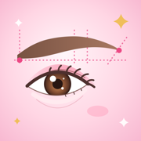

フロントカメラに映った顔に、眉毛の黄金バランスのガイドを重ねます。
アプリの中のブラウザで開いています。カメラが使えないことがあるので、Safari（Androidは Chrome）で開いてください。
画面の「…」や共有のメニューから「ブラウザで開く」を選ぶか、URLをコピーして貼り付けてください。
終了しましたカメラを止めました。
準備しています…
※ 点数は、カメラに映った眉の位置と形から出した目安です。明るさや顔の角度で変わります。